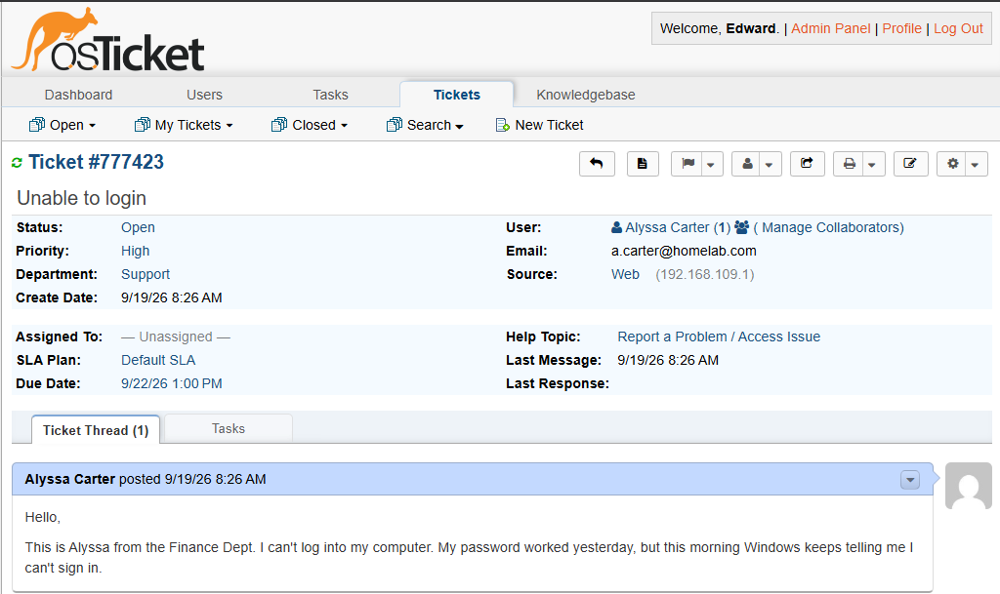
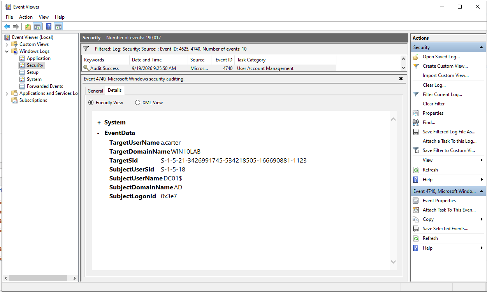
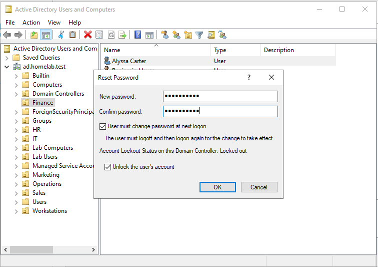
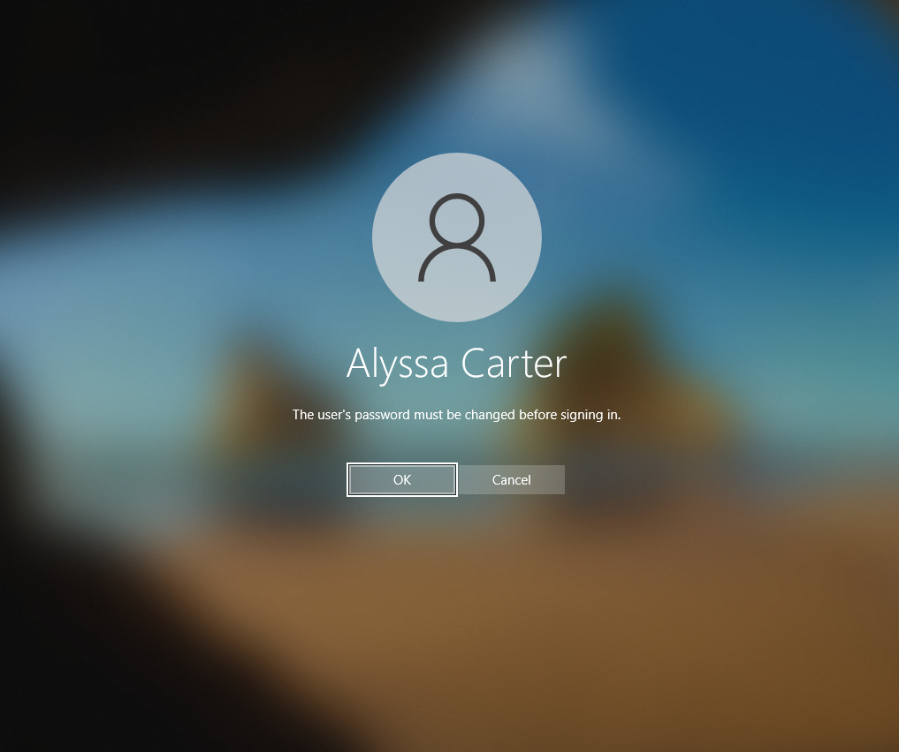

User Unable to Sign In
A simulated Finance department user reported being unable to sign in to a domain-joined Windows 10 workstation. The user's password had worked previously.
DEPARTMENT
Finance
WORKSTATION
WS-001
DOMAIN
ad.homelab.test
Troubleshooting a simulated Windows domain authentication incident involving an Active Directory account lockout.
A simulated Finance department user reported being unable to sign in to a domain-joined Windows 10 workstation. The user's password had worked previously.
Finance
WS-001
ad.homelab.test
The simulated incident was documented and managed through osTicket to practice a structured Help Desk workflow.

The incident was approached as an authentication problem rather than immediately resetting the user's password. Several possible causes were considered before making changes to the account.
User credential entry or Caps Lock issue.
Active Directory account locked after failed authentication attempts.
Disabled or expired account.
Authentication or workstation restrictions affecting the user.
The user's account was inspected in Active Directory Users and Computers. The account was enabled but showed that it had been locked.
Investigation showed multiple failed authentication attempts associated with the account. No account restrictions were identified that explained the login failure.
Authentication evidence was reviewed to confirm the account lockout and support the troubleshooting decision before making changes to the user's account.

The account was unlocked first and authentication was tested again before performing a password reset.
Unlocking the account alone did not resolve the simulated incident. The password was then reset to a temporary password and the user was required to change it at the next login.
Authentication was tested again after the change and the user successfully signed in to the domain.
After the initial unlock did not resolve the simulated incident, the account password was reset and the user was required to change the temporary password at the next login.

The user completed the required password change and authentication was successfully verified, confirming that access to the domain account had been restored.

The immediate cause of the login failure was an Active Directory account lockout following multiple failed authentication attempts.
The exact source of the failed authentication attempts was not conclusively identified, so the investigation did not claim a deeper root cause without supporting evidence.
The incident followed a structured troubleshooting process designed to minimize unnecessary changes.
User Report → Identify Symptom → Check Account State → Gather Evidence → Form Hypothesis → Test Least-Invasive Fix → Escalate to Password Reset → Verify Authentication → Document Resolution
Verify account state and available evidence before making administrative changes.
Attempt the least-invasive appropriate fix before escalating to larger changes.
Resolving the immediate symptom does not automatically prove the underlying cause.
A ticket is not resolved until the expected authentication behavior is confirmed.
This incident was completed in an isolated home lab as an AI-assisted Help Desk troubleshooting simulation. The scenario was used to practice investigation, decision-making, remediation, verification, and professional incident documentation.